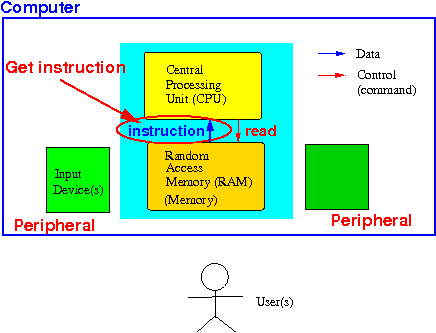

- Recall the computer system:
- The computer system consists of the
components in the
computer that performs the
main (computing) function
- The computer system
(not the same as a (whole) computer)
consists of:

Functionality:
- The Central Processing Unit
executes (computer) instructions
---
(remember that a computer can
only perform
computations !!!)
- The memory (RAM) store data and computer instructions
- The Central Processing Unit
executes (computer) instructions
---
(remember that a computer can
only perform
computations !!!)
- The computer system consists of the
components in the
computer that performs the
main (computing) function
- My mechanical analogy of the computer system to help you
understand its function/operation
-
The computer system is
an electronical device, so it's
kinda hard to
imagine the
operations performed by
computer system
- The memory of a computer also contain data used by the computer
To make the operations of a computer system clearer, I have previously (see: click here) use an "imaginary" analogy of a "mechanical" computer system:

The CPU is like a mechanical calculator (the CPU can add, subtract, multiply, divide, add, or and negate values)
The memory is like a long sheet of paper with holes that contains instructions for the CPU.
One important difference:
- What a computer system can
do (i.e.: capability)
and
the interactions between
the computer components that
makes it possible:
- The CPU can
obtain (= read)
the next computer instruction
from the memory:
 After the CPU obtain the instruction, the CPU will execute the instruction (how that is done will be discussed later)
Just to show to you that the CPU can only perform arithmetic and logical operation, here is a summary sheet of the instructions of the ARM processor that we will learn to program: click here
Analogy:
The CPU can fetch the next (calculator) instructions in a program from the memory and execute the (fetched) instruction
The tape advances so a new instruction will be executed the next time.
- The CPU can also
obtain (= read)
data (= operand)
from the memory:

The data is used as an operand for the current instruction that is executed by the CPU
Analogy:
The execution of an instruction (such as addition) may require the CPU to fetch operands (= data) from the memory
- The CPU can
store (= write)
result of computations
to the memory:

When the CPU performs a computation, the result of the completed computation may need to be stored back in memory for safe-keeping
Analogy:

- The CPU can
obtain (= read)
the next computer instruction
from the memory:
- The memory
is a huge storage component that
stores:
- Instructions of computer programs
- Variables (= data) used in the computer programs
- The CPU can
retrieve (= read)
the next instruction from
memory (to execute it):
(See above figure for illustration)
- The CPU can
retrieve (= read) and
store (= write) data
from/to the computer memory
(See above figures for illustration)
|
|